Ideal para a aplicação de bases líquidas e cremosas quando se quer uma cobertura mais densa.
Precisa ter certa habilidade para a pele não ficar marcada, porque as cerdas ficam carregadas
de produto e ele não é o melhor para esfumar.
po banana
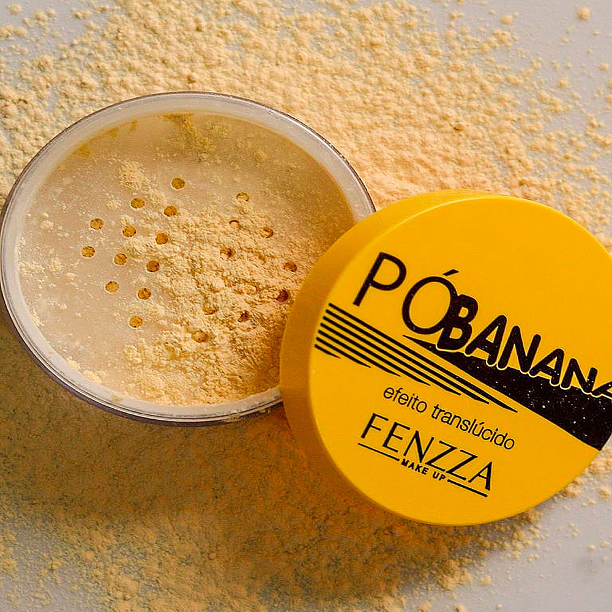
serve para finalizar a maquiagem, ajudando a selar a base e o corretivo. Devido à sua textura mais fina e solta, ele ajuda a deixar a maquiagem sequinha.
blush
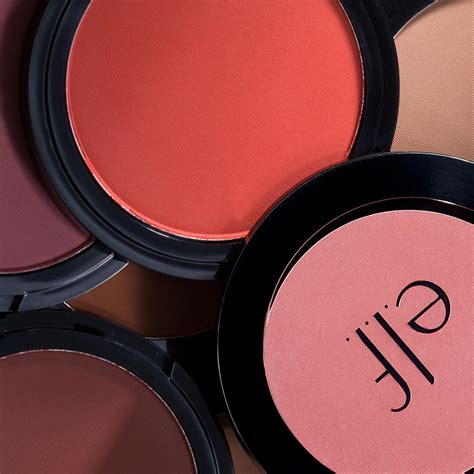
O blush pode ser usado na hora de finalizar a make, ele serve para dar um corada na pele garantindo uma cor de pele saudável para o rosto. Outra função do rosto é cooperar para que a make fique com a estética natural. Para usar esse produto, uma leve passada de pincel sobre as maçãs do rosto já faz toda diferença.
j
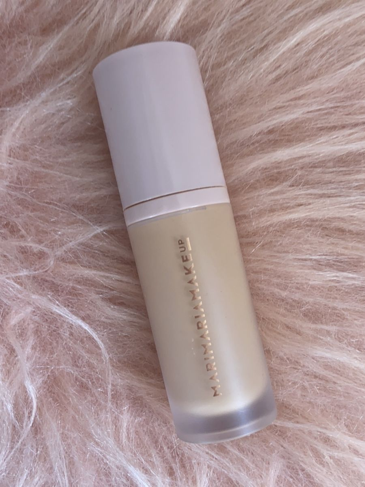
Além de preparar a pele, que é a principal finalidade do produto, ela possui outras funções: Uniformiza o tom do rosto. Suaviza pequenas imperfeições.
pincel para esfumado
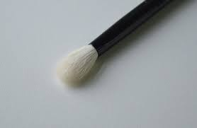
Ele contém cerdas macias para dar acabamento perfeito, uniforme e sem marcas, principalmente na área dos olhos. Ele ajuda a realçar os olhos, deixando olhar mais destacado seja com cores claras, escuras ou com brilhos.
sérum
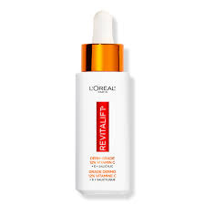
Os séruns proporcionam uma pele firme e uniforme, ajudando na renovação da pele do rosto e pescoço. Isso porque, esses produtos tendem a ter poder hidratante que atua diretamente nas camadas mais profundas da pele. Proporcionando firmeza e uniformização do rosto.
sérum hidratante
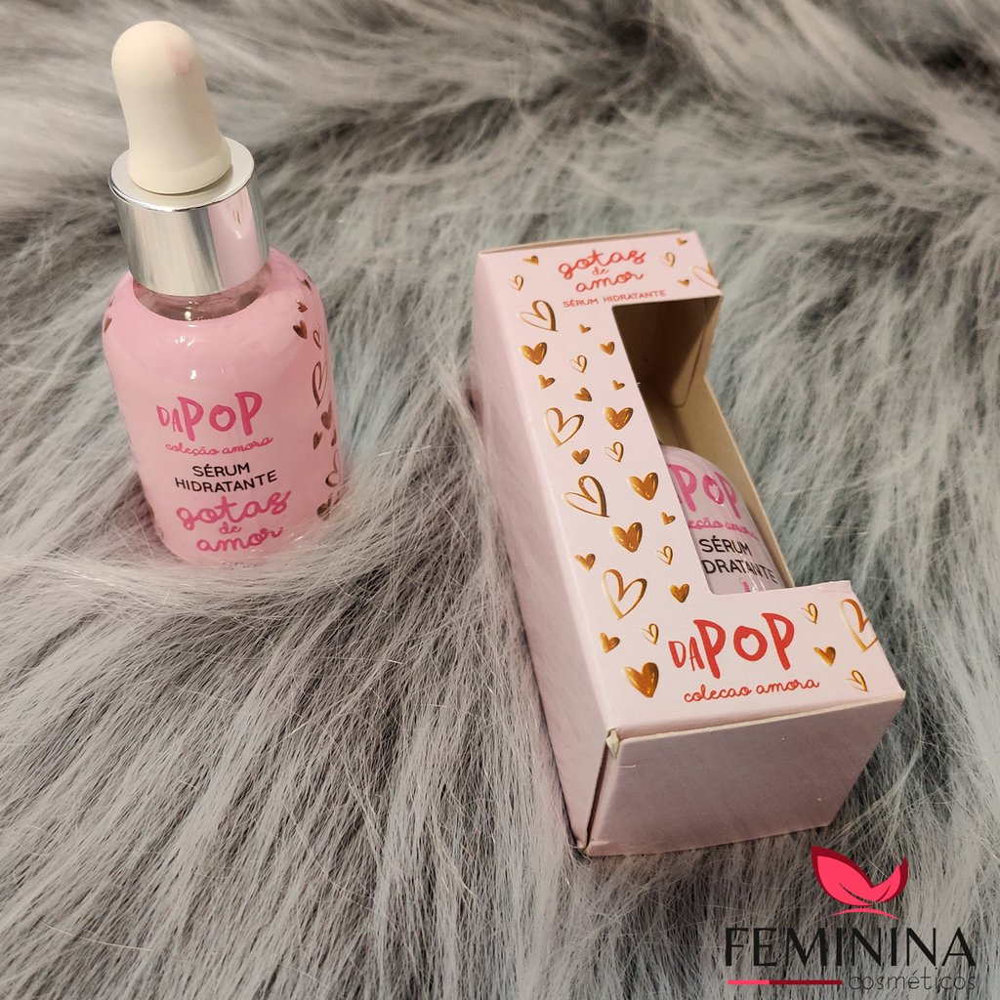
OBasicamente, o corretivo é útil para dar uma cobertura extra naquela espinha que está um pouco avermelhada, disfarçar olheiras, iluminar ou sombrear pontos do rosto na hora de fazer o contorno. O corretivo, se escolhido de forma correta, pode funcionar em mais de uma etapa da maquiagem..
corretivo
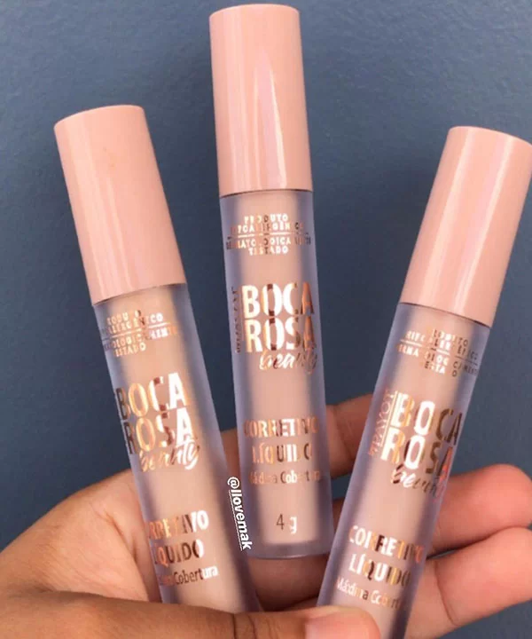
Os séruns proporcionam uma pele firme e uniforme, ajudando na renovação da pele do rosto e pescoço. Isso porque, esses produtos tendem a ter poder hidratante que atua diretamente nas camadas mais profundas da pele. Proporcionando firmeza e uniformização do rosto.
gloss labial
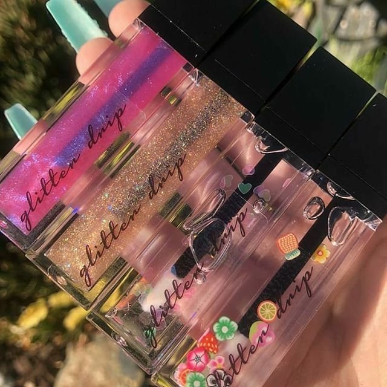
Apesar do lip oil ou lip balm terem um efeito parecido, a função principal do gloss é dar brilho à boca, enquanto a do lip oil e lip balm é hidratar. Além disso, o gloss é mais translúcido e brilhante, dando um efeito mais impactante na make, ainda que seja mais sutil que um batom, por exemplo.
cilios postiços
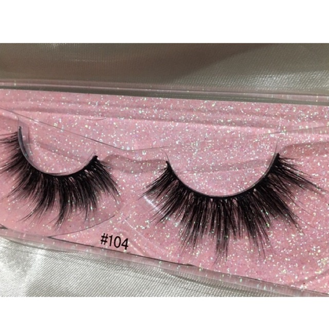
O cílios postiços servem para realçar o olhar e deixar a mulher mais poderosa. “Os cílios são grandes aliados porque eles dão um up em qualquer maquiagem”, explica o maquiador Lú Ramos. Especialista no acessório, a marca Lucat Beauty reuniu algumas dicas preciosas para você arrasar ao usar cílios postiços.
deliniador
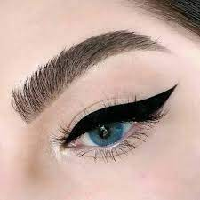
O delineador serve para dar acabamento na maquiagem. Ele dá um up nos olhos, ajuda a levantar o olhar”, explicou o beauty stylist de celebridades Théo Carias, que também dá dicas de beleza em programas do canal GNT.
lip tint
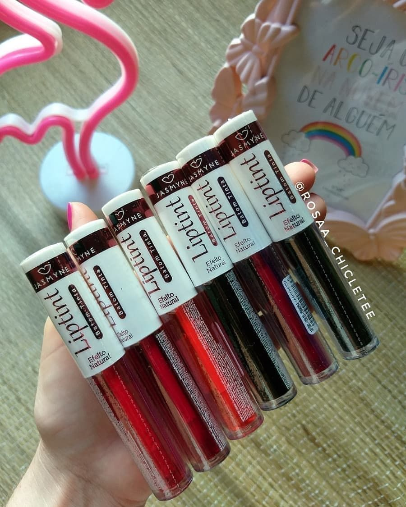
Um produto versátil e que garante um efeito natural, indicado para deixar lábios e maçãs do rosto corados. Esse é o lip tint, uma espécie de batom que virou o novo queridinho da maquiagem. Além de ser aplicado na boca, ele é multifuncional e pode ser usado também como blush e sombra.